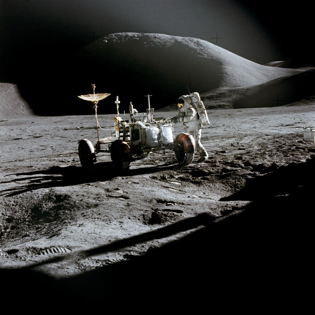
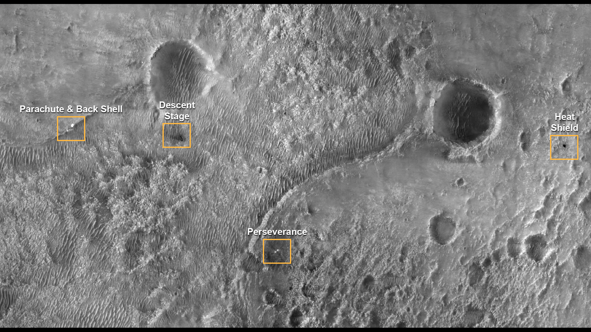

A JOURNEY THROUGH SPACE HISTORY
Every mission leaves something behind. Discover the forgotten equipment on the Moon and Mars.
Explore Their Stories →Explore the equipment left behind during the Apollo missions.

The lower part of the Apollo Lunar Module remained on the Moon.
The descent stage helped astronauts land safely on the Moon. After the astronauts returned to the Command Module, the descent stage remained on the lunar surface.
An electric vehicle used by Apollo astronauts to explore the Moon.
The Lunar Roving Vehicle was used during Apollo 15, Apollo 16 and Apollo 17 missions. It helped astronauts travel farther across the lunar surface and collect scientific samples. The rover was left on the Moon after each mission.
Scientific instruments deployed by Apollo astronauts on the Moon.
ALSEP stands for Apollo Lunar Surface Experiments Package. These instruments were installed by astronauts to study moonquakes, lunar soil and the Moon's environment. They sent scientific data back to Earth for years.
Discover the landing equipment that helped NASA rovers reach Mars.

NASA's Perseverance landing site and the equipment left behind on Mars.
Helped slow down the Perseverance rover during its landing on Mars.
The parachute helped reduce the spacecraft's speed as it travelled through the Martian atmosphere. It was part of the Mars 2020 landing system.
Protected the rover during its journey through the Martian atmosphere.
The backshell protected the spacecraft during its journey through the Martian atmosphere. It also carried the parachute used during landing.
Lowered the Curiosity rover safely onto the Martian surface.
NASA used the Sky Crane landing system to gently lower the Curiosity rover onto Mars using cables. After landing, the Sky Crane flew away and crashed at a distance.
Test your knowledge about Moon and Mars missions!
Explore the original NASA resources used in this project.